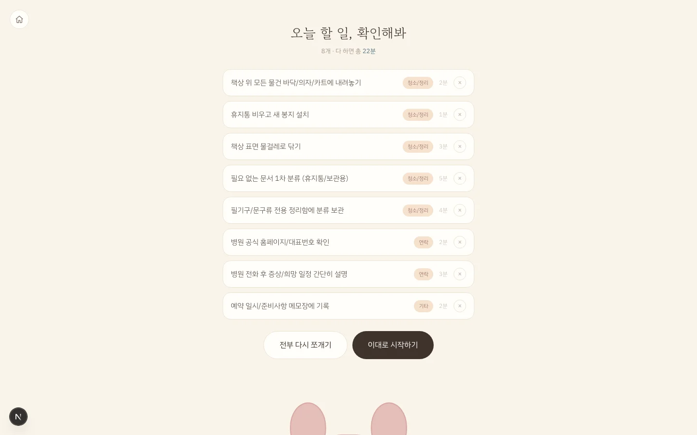

날씨 때문에 흔들리는 동네 가게 매출을,
사장님이 신경 쓰지 않아도 AI가 알아서 방어하는 자율 마케팅 에이전트
왜 만들었나날씨는 매출을 흔드는데, 대응할 사람이 없다
한국은행 BOK 이슈노트 제2025-29호(2025.9)
일별 카드사용액 × 기온·강수량 분석.
금·토에 비가 오면 감소폭이 더 컸다.
1인 운영 카페 사장님이
마케팅에 쓸 수 있는
하루 시간의 전부
오픈 준비 · 응대 · 마감을 혼자 처리한다.
더 좋은 마케팅 툴이 아니라
“마케팅을 안 해도 되는 상태”
제품의 목표는 기능 제공이 아니라 의사결정 대행 —
에이전트가 판단까지 끝내 두고, 사장님은 확인만 한다.
무엇이 달라지나사람이 개입하는 지점을 5곳에서 1곳으로

사장님이 보는 화면은 이것 하나
문구를 고치거나, 그대로 발송
차별점비슷한 도구가 잘 안 하는 세 가지
수신동의·(광고) 표기·야간 차단을 발송 API에서 검사한다. 화면을 우회해 API를 직접 불러도 막힌다.
apps/server/src/legal/filter.ts단골 문자는 1인 1코드로 전환을 실측하고, 수신자 목록이 없는 공개 채널은 새 손님에게 알리는 일을 맡는다.
coupons · issueCouponsFor()승격 버튼을 누르는 건 언제나 사장님이다. 에이전트가 스스로 권한을 넓히지 않는다.